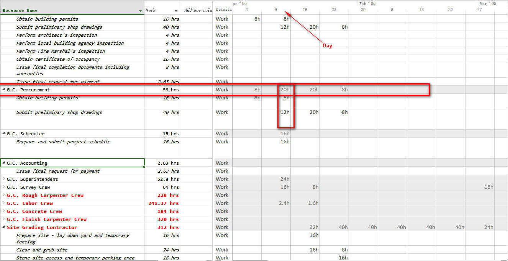

<!--<div ng-include=" 'tpl/task.processes.filter.html' "></div>-->

<div ng-controller="TaskManager" ng-init="app.settings.appActions='tpl/task.processes.actions.html' ">
    <jqx-tabs jqx-width="auto" jqx-theme="curTheme" jqx-on-tabclick="tabclick">
        <ul>
            <li style="margin-left: 30px; ">Processes</li>
            <li>Performance</li>
            <li>ResourceLoad</li>
        </ul>
        <div style="overflow:hidden" ng-controller="ProcessesCtrl">
            <jqx-grid jqx-settings="processesSettings" jqx-theme="curTheme" style="border:none" jqx-on-bindingcomplete="bindingcomplete" jqx-on-rowclick="rowclick" jqx-on-rowselect="rowselect" jqx-on-rowdoubleclick="rowdoubleclick"></jqx-grid>
        </div>
        <div style="overflow:hidden" ng-controller="PerformanceCtrl">
            <jqx-grid jqx-settings="planBoardSettings" jqx-theme="curTheme" jqx-on-rowclick="rowclick" jqx-on-rowdoubleclick="rowdoubleclick" style="border:none"></jqx-grid>
        </div>
        <div style="overflow:hidden" ng-controller="ResLoadCtrl">
            
        </div>
    </jqx-tabs>
</div>

